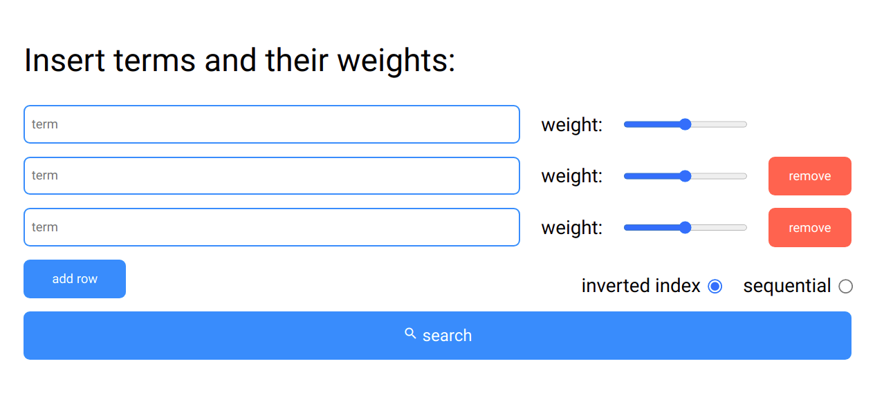

Jedná se o implementaci vyhledávače v HTML stránkách. Aplikace dokáže vyhledávat podle zadaných slov a jejich vah. Díky vektorovému modelu jsme schopni vyhledávat velmi rychle.
Hlavní funkcí aplikace je samozřejmě vyhledávání dokumentů dle termů a vah. Druhou zajímavou funkcionalitou je vyhledávání dokumentem. V neposlední řadě program slouží jako REST api, které můžu využívat v dalších programech.
Vyhledávání v dokumentech podle termů funguje tak, že uživatel u každého termu určí, jakou má váhu. Čím větší má term váhu tím víc se na něj soustředí vyhledávání. Váhu si snadno nastavíme ve webové aplikaci.
Vyhledávání podle dokumentu funguje tak, že se vyhledávač snaží najít co nejpodobnější dokumenty tomu hledanému. Toto se hodí například při doporučování článků na webu nebo produktů v obchodě.
Projekt je složen ze dvou hlavních částí. První částí je webový klient s uživatelským prostředím. Druhou a hlavní částí je restové api, ke kterému se klient připojuje.
Klient od uživatele získá dotaz a pošle ho na server, který mu vrátí seznam vyhledaných dokumentů. V aplikaci je možné si zvolit libovolné množství termů. Každý term má vedle sebe range input, kde si lze snadno zvolit váhu termu. Klienta jsem implementoval v Javascriptu.
Server musí být nejdříve spuštěn v módu, kdy zpracuje všechny dokumenty, ve kterých se následně bude hledat. Je nutné dokumenty zbavit HTML tagů a získat jen čistý text. Server zjistí, jaká klíčová slova dokumenty obsahují a v jakém množství. Samozřejmě indexuje jen klíčová slova a bezvýznamová slova jako jsou například spojky a předložky zahodí. Při vyhledávání už jen používá strukturu oindexovaných dokumentů a porovnává dotaz s dokumenty na základě cosinovské podobnosti.
zveřejněná implementace na mém GitHubu.